Az vagyok, akinek képzelem magam
A XIX. század óta filozófiai fogalmaink szerint az emberi lény egy önmagát, saját mércéje szerint meghatározni képes entitásként működik. Ebben az alapállásban egy művészi szerepvállalás is több szinten tárgyalható. A Művész szerepvállalása a műalkotás tükrében, a társadalom tükrében (külön a művésztársadalmon belül) és a művészi szerepjátszás, mint belső kényszer okozta alkotás lélektani aspektus. De vajon az vagyok-e, akinek képzelem magam? A koncepció, és a fenti mondat, az alkotó hétköznapi létezéséről folytatott diskurzusunkban került terítékre a hatdé idei művésztelepén. Az értelmezések még egy kis csoportosuláson belül is jelentősen eltértek egymástól, így a kiállítás címmondatát nem zárja semmilyen írásjel, sem kérdőjel, sem pont. Izgalmasnak találtuk, hogy mindegyikünk abból az irányból kapcsolódjon hozzá, amely a leginkább foglalkoztatja:
Művész e valaki, aki annak képzeli magát?
Autentikus, vagy irányított létállapot az alkotónak lenni?
Szükséges-e, hogy az alkotó direkt módon táplálja öntudatát?
Szükséges-e, hogy bármilyen ember egész lényére vonatkozóan táplálja az öntudatát?
Hány féle énképe jelenik meg a hétköznapokban valakinek, illetve létezhet-e ezek tükrében egységes öntudat?
A mások és az egyén elképzelése önmagával kapcsolatban, milyen kölcsönhatásban állnak egymással?
Ezekre, és a megannyi más felmerülő kérdésre adott szubjektív variációk lesznek láthatóak a hatdé novemberi kiállításán az Esernyős Galériában.
Kattints a képekre a galéria megnyitásához!
 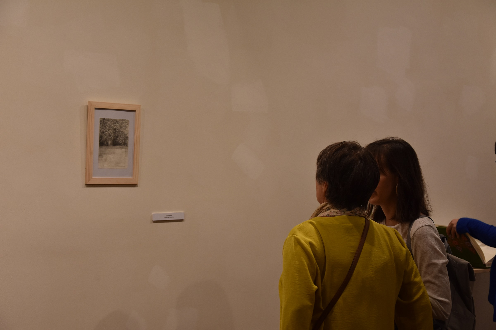
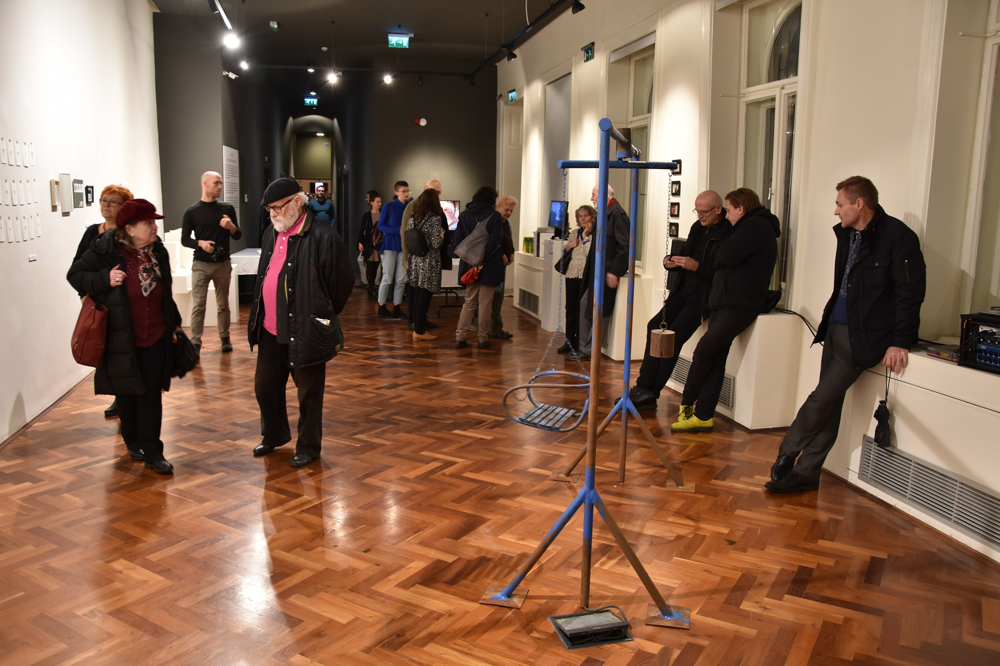
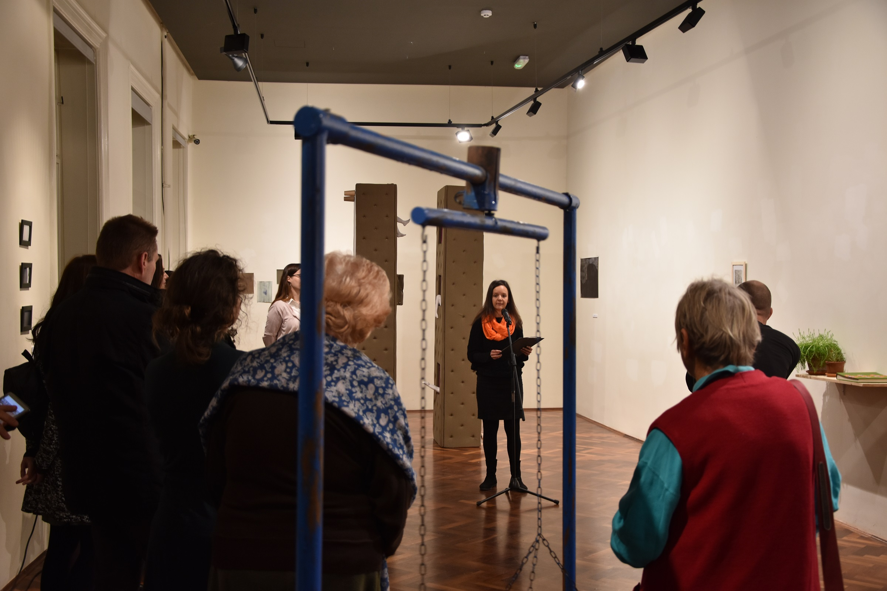
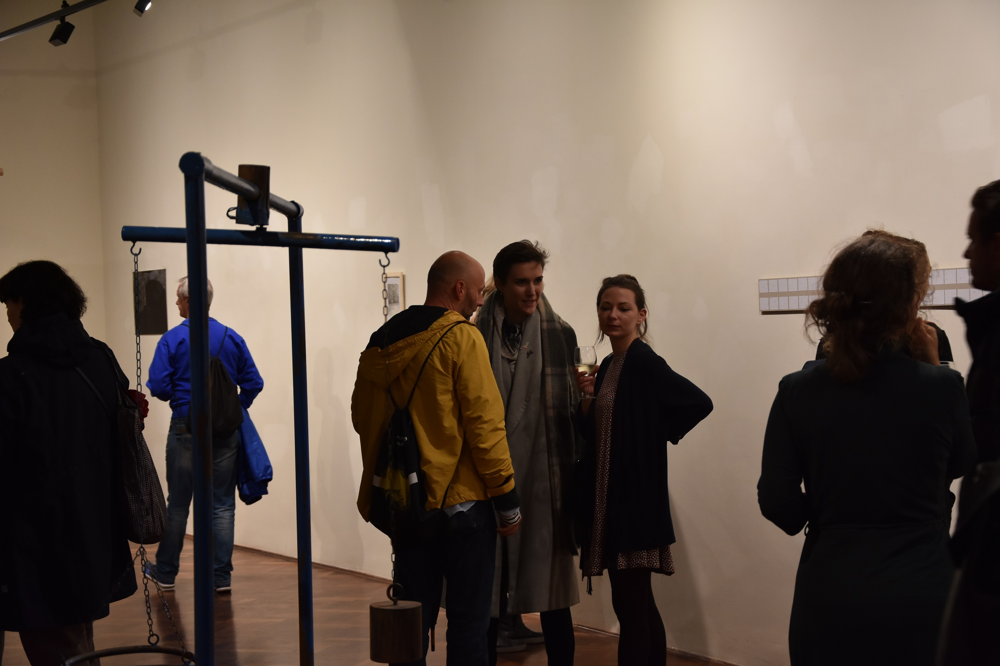
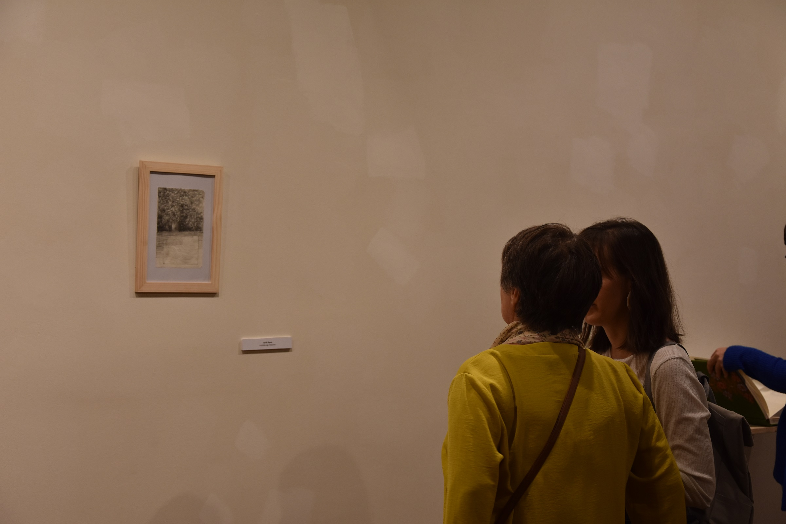
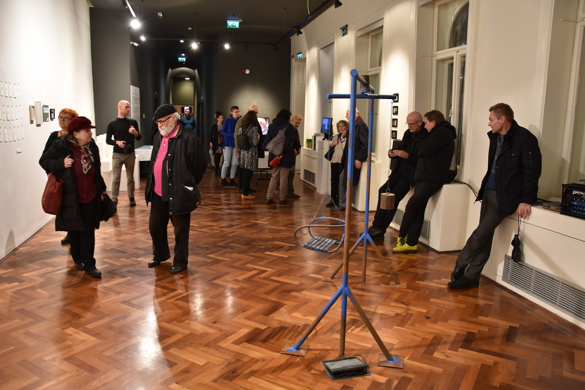
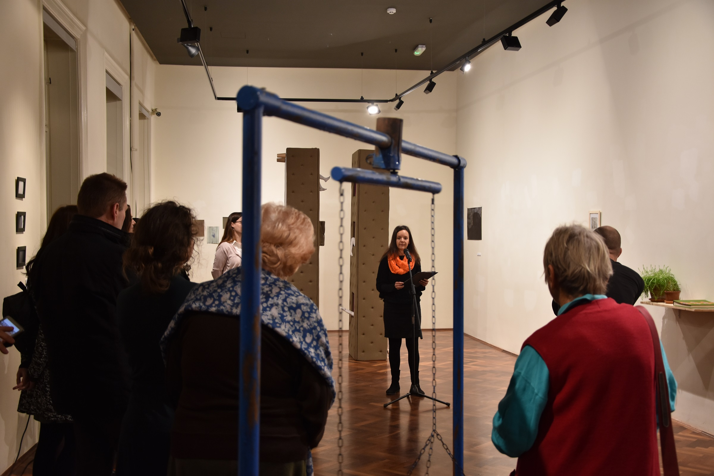
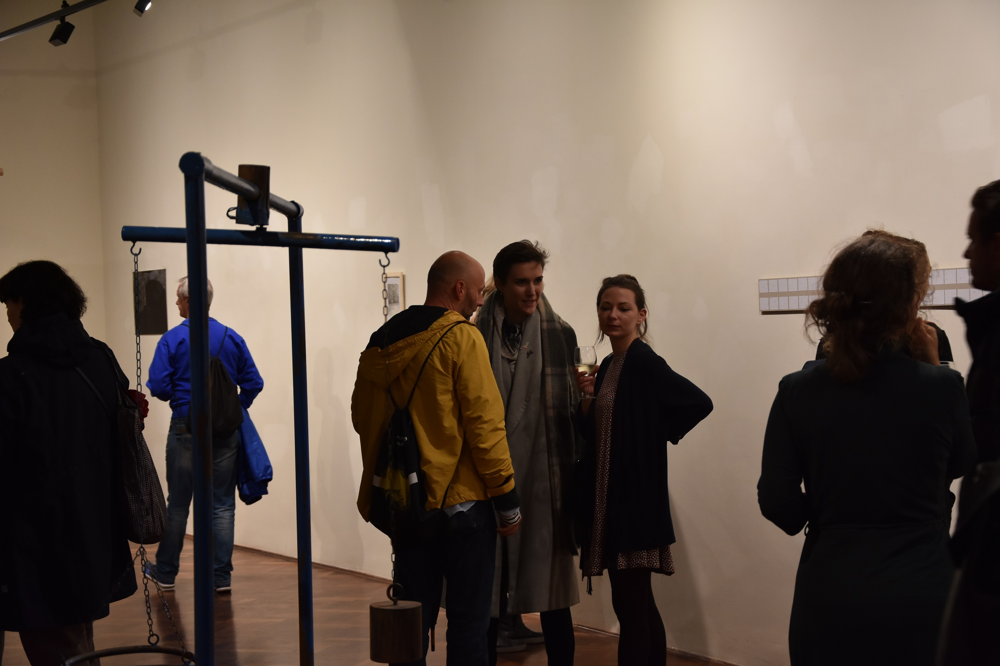
 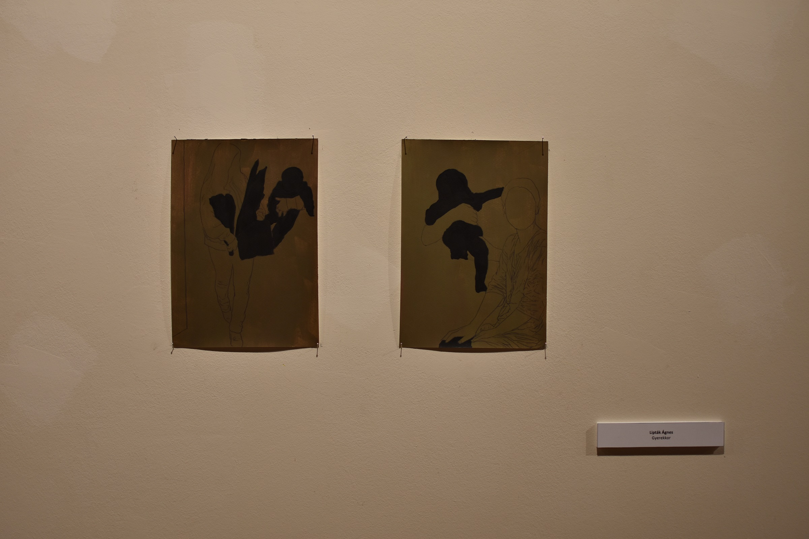
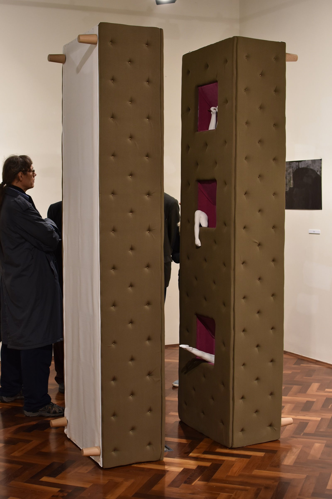
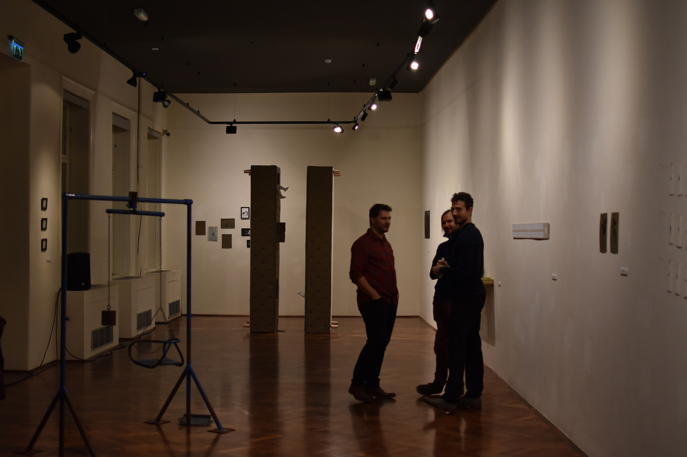
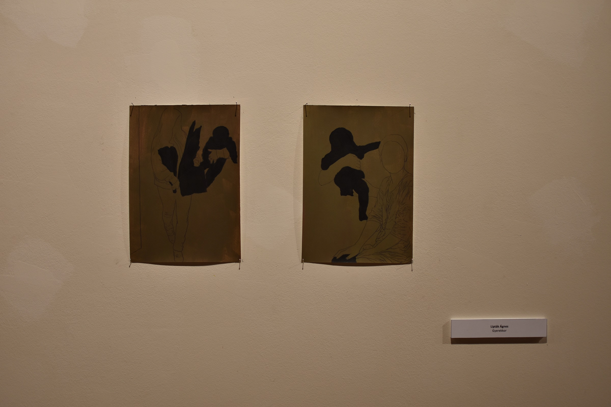
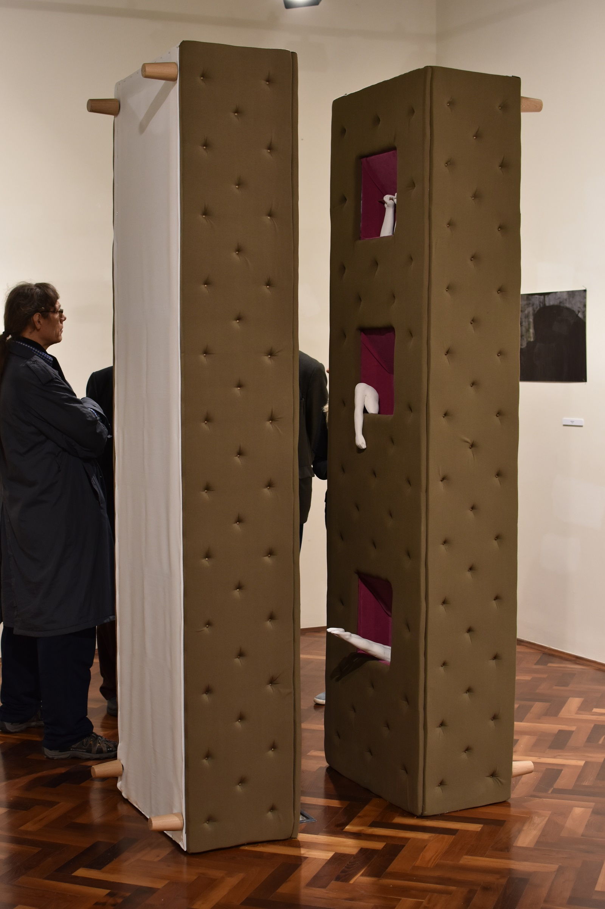
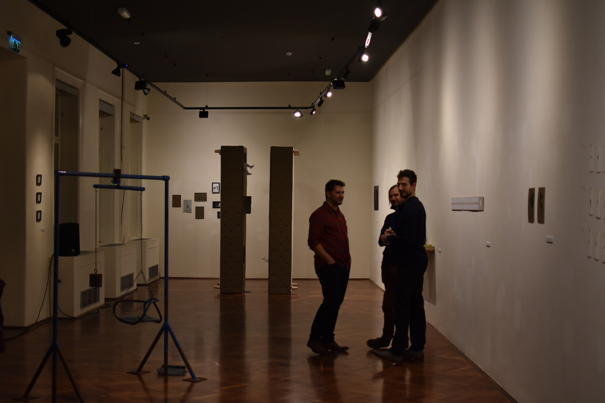